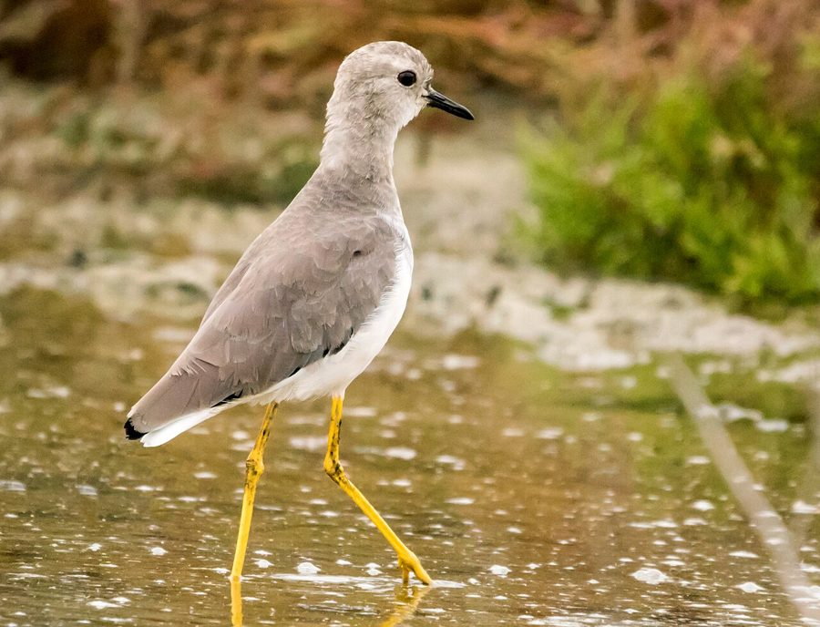

व्हाइट-टेल्ड लैपविंगWhite-tailed Lapwing
Vanellus leucurus · Charadriidae · BRD-0236

- Scientific name वैज्ञानिक नाम
- Vanellus leucurus (Lichtenstein, 1823)
- Family कुल
- Charadriidae
- Hindi हिंदी
- व्हाइट-टेल्ड लैपविंग
- Local names स्थानीय नाम
- white-tailed lapwing, white tailed lapwing, lapwing
- Status here यहाँ की स्थिति
- native
- Movement आवागमन
- Winter visitor
- Known from कहाँ दर्ज
- Others have published records from the Basti–Ayodhya districts बस्ती–अयोध्या के ज़िलों से दूसरों के प्रकाशित अभिलेख
- IUCN IUCN
- LC
- Review समीक्षा
- audited and independently read
When to look कब देखें
Winter visitor शीतकालीन प्रवासी. Expected mainly in September, October, November, December, January, February, March, April. मुख्यतः सितंबर, अक्टूबर, नवंबर, दिसंबर, जनवरी, फ़रवरी, मार्च, अप्रैल में अपेक्षित।
Arrives in September–October from breeding grounds in Central Asia and southern Russia; departs by April. Expected on open grasslands and wetlands. All migrants and visitors →
Tell it apart from इनसे अलग पहचानें
व्हाइट-टेल्ड लैपविंग / White-tailed Lapwing
Vanellus leucurus (Lichtenstein, 1823) — Charadriidae
व्हाइट-टेल्ड लैपविंग — यह छोटी-मझोली चिड़िया मध्य एशिया से सर्दियों में भारत आती है। इसका सबसे खास लक्षण इसकी सफ़ेद पूंछ है जो उड़ान में बहुत स्पष्ट दिखाई देती है। इसकी टाँगें पीली होती हैं और पीठ का रंग हल्का भूरा होता है। ये खेतों और घास के मैदानों पर ज़मीन पर घूमती हैं और कीड़े खोजकर खाती हैं। इसकी आवाज़ सीटी जैसी होती है।
Quick Identification त्वरित पहचान
| Feature | Description |
|---|---|
| Size | Small lapwing; 25–27 cm long |
| Plumage | Pale sandy-brown above; white underparts; buff wash on breast |
| Head | Pale brown with thin dark line through eye |
| Tail | Distinctive white or pale tail (diagnostic) |
| Legs | Yellow; medium length |
| Wings | Pale brown; white pattern visible in flight |
| Behaviour | Runs on ground in jerky movements; often in small flocks |
| Call | Loud, musical whistle pee-it or wee-wit |
Field tip: A small lapwing with pale sandy-brown plumage and distinctively white tail, visible both perched and in flight. On grasslands and open fields in eastern UP during winter, look for small flocks of these birds running on the ground. The yellow legs, pale plumage, and white tail are diagnostic.
हिंदी — कैसे पहचानें:
छोटी टिटहरी, हल्के रंग की।
सफ़ेद पूंछ (बहुत स्पष्ट)।
पीली टाँगें।
खेतों पर दौड़ती है।
तेज़ सीटी जैसी आवाज़।
Morphology आकारिकी
Biometrics:
| Measurement | Range |
|---|---|
| Total length | 250–270 mm |
| Wing (flattened chord) | 155–180 mm |
| Tail | 75–95 mm |
| Bill | 22–28 mm |
| Tarsus | 25–32 mm |
| Weight | 100–150 g |
Size: 25–27 cm long; wingspan 52–60 cm.
Plumage: Sandy-brown or buff above. Crown and back pale brown. Face and throat white. Breast buff-brown. Underparts white. Rump buff. Tail distinctively white — this is the diagnostic feature.
Head: Pale brown with thin dark loral line (through eye). Crown slightly crested.
Wings: Pale brown above; white pattern on coverts visible in flight. Toes extend slightly beyond tail in flight.
Tail: Entirely white or very pale — distinctive and diagnostic. White visible both perched and in flight.
Legs: Medium length, bright yellow to golden yellow.
Bill: Relatively short, black.
Sexes: Similar; males may be slightly brighter.
Vocalisations. Vocal bird with loud calls:
- Call: A loud, musical pee-it or wee-wit, given in flight and perched.
- Alarm: A sharp pee-yaw or pee-yaw-wit when alarmed.
- Flight call: Repeated whistling.
हिंदी: बहुत तेज़ आवाज़। "पीई-इट" जैसी सीटी।
Behaviour & Ecology व्यवहार और पारिस्थितिकी
Ground forager: Feeds on open ground, running in short bursts and pausing to pick insects from the surface. Feeds on:
- Insects and larvae
- Small beetles and flies
- Grasshoppers
- Small seeds
Foraging behaviour: Often in small flocks; runs with jerky movements. Feeds mainly in early morning and late afternoon.
Social behaviour: Gregarious, particularly in winter. Forms small flocks. Often mixes with other lapwing species.
Roosting: Roosts on open ground; often communal with other birds.
Habitat: Favours open grasslands, steppe, and cultivated fields. Often in areas with sparse vegetation.
हिंदी: झुंड में घास के मैदान पर रहता है। दौड़ते हुए खाना ढूंढता है।
Life Cycle / Phenology जीवन चक्र
Winter visitor: Absent during breeding season (April–August); returns to eastern UP from September–October and remains through March–April.
Arrival and departure: First birds arrive in September; peak numbers November–January; departure begins March, completed by April.
Breeding range: Central Asia, southern Russia, and Kazakhstan. Breeds April–July on grasslands and steppe.
Migration: Diurnal migrant.
Wintering: Found on open grasslands and cultivated fields; prefers areas with short grass or sparse vegetation.
हिंदी: सितंबर में आता है, अप्रैल तक रहता है।
Host Plants or Prey आहार
| Food Type | Examples | Feeding Behaviour |
|---|---|---|
| Insects and larvae | Beetles, flies, grasshoppers | Picking from ground surface |
| Small arthropods | Spiders, small invertebrates | Running and picking |
| Small seeds | Grass seeds | Incidental |
हिंदी: जमीन पर कीड़े खोजता है। दौड़ते हुए चोंच से उठाता है।
Predators / Natural Enemies शत्रु
- Avian predators: Steppe Eagle, Hen Harrier, other raptors
- Mammalian predators: Fox, jackal
- Corvids: Crows
हिंदी: बाज और चिल इसका शिकार करते हैं।
Agricultural / Human Relevance कृषि प्रासंगिकता
Protected status: All wild birds in India are protected under the Wildlife (Protection) Act 1972, Schedule IV. Hunting is illegal.
Agricultural value: Feeds on grasshoppers and other agricultural pests.
Cultural significance: Known locally in agricultural regions as a winter visitor.
हिंदी: यह विधि अधिनियम 1972 के अंतर्गत संरक्षित है।
Expected Locally स्थानीय रूप से अपेक्षित
Not a field record. Written from published accounts for eastern Uttar Pradesh. No confirmed local sighting yet — if you have seen it, that is what the atlas needs.
अभी तक स्थानीय पुष्टि नहीं। यह विवरण प्रकाशित स्रोतों से है, किसी अवलोकन से नहीं।
The White-tailed Lapwing is expected as a winter visitor to open grasslands and cultivated fields of eastern Uttar Pradesh from September to April. Based on its range and habitat, the species should occur in areas with short grass or sparse vegetation, including agricultural fields and grassland patches. It is less common than some other lapwing species in the region. Peak occurrence should be November–January. A first record would require a clear photograph showing the distinctive white tail, yellow legs, and pale sandy-brown plumage, with place and date, submitted through the About page.
Distribution वितरण
Global range: Central Asia and southern Russia. Winters in southern Asia and Africa.
In India: Uncommon but regular winter visitor to open areas in the north and northeast.
In Uttar Pradesh: Winter visitor to grasslands and open areas, particularly in northern and eastern districts.
In Basti district / eastern UP: Uncommon winter visitor to open grasslands and cultivated fields, September–April.
Research Questions शोध प्रश्न
- What are the population estimates and distribution of White-tailed Lapwings in eastern UP grasslands during winter?
- क्या यह प्रजाति खेतों में अधिक दिखती है, या घास के मैदानों में?
- How does the flock size of White-tailed Lapwings vary seasonally and by habitat type?
- What is the composition of the winter diet of White-tailed Lapwings in cultivated versus grassland habitats?
- क्या यह पक्षी हर साल एक ही जगह पर लौटता है? (A child can survey grassland patches and record presence/absence.)
- How do changes in agricultural practices (ploughing, stubble burning) affect White-tailed Lapwing populations?
Similar Species मिलती-जुलती प्रजातियाँ
| Species | Key Difference | Hindi | Field Rule | |
|---|---|---|---|---|
| Northern Lapwing (Vanellus vanellus) | Much larger; black and white; prominent crest; black underparts | उत्तरी टिटहरी | Northern Lapwing is much larger with bold black-and-white pattern and crest. White-tailed Lapwing is smaller and sandy-brown. | |
| [[yellow_wattled_lapwing\ | Yellow-wattled Lapwing]] (Vanellus malabaricus) | Smaller; yellow wattles on face; yellow bill | पीली लटकन टिटहरी | Yellow-wattled Lapwing has yellow facial wattles and different call. White-tailed has white tail. |
Field rule: A small pale sand-brown lapwing with distinctive white tail (visible perched and in flight), yellow legs, and loud whistling call is a White-tailed Lapwing. The white tail is diagnostic.
Taxonomy & Classification वर्गीकरण
Original description. Described by Martin Lichtenstein in 1823 in Verzeichniss der Doubletten des Zoologischen Museums as Vanellus leucurus. Type locality: central Asia.
Subspecies. Monotypic — no subspecies are currently recognised.
Family and order placement. Order Charadriiformes; family Charadriidae (plovers and lapwings). The genus Vanellus contains the lapwings, with about 23 species.
Phylogenetic notes. White-tailed Lapwing is part of the genus Vanellus and is related to other Asian lapwing species.
IUCN status rationale. Assessed as Least Concern (LC). The global population is large and stable. The species occupies extensive grassland and steppe habitats. Some regional declines due to habitat loss.
हिंदी: मध्य एशिया की चिड़िया है।
Photo Gallery फोटो गैलरी
No photos yet — add field photos to media/species/white_tailed_lapwing/ and run node scripts/sync_photos.js.
Wanted photos:
- Showing white tail clearly
- In flight with white tail visible
- On grassland or field
- Close-up of head and bill
- Flock on open ground
References संदर्भ
- Lichtenstein, M.H.C. (1823). Verzeichniss der Doubletten des Zoologischen Museums der Universität Berlin. Berlin.
- Ali, S. & Ripley, S.D. (1987). Handbook of the Birds of India and Pakistan. Vol. 2. Oxford University Press, New Delhi. Pp. 155–157.
- Grimmett, R., Inskipp, C. & Inskipp, T. (2011). Birds of the Indian Subcontinent. 2nd ed. Christopher Helm, London. Pp. 116–118.
- del Hoyo, J., Elliott, A. & Sargatal, J. (eds). (1996). Handbook of the Birds of the World. Vol. 3. Lynx Edicions, Barcelona.
- BirdLife International (2023). Vanellus leucurus. IUCN Red List of Threatened Species. IUCN, Cambridge.
- GBIF Occurrence Data — Vanellus leucurus, India.
Source file: species/fauna/birds/white_tailed_lapwing.md